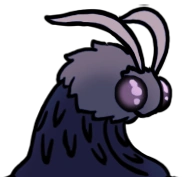

Uma das menores áreas do jogo, mas uma das mais importantes, Aqui, começa o principal objetivo do jogo, e sua missão começa a ficar mais clara. O Ferrão dos Sonhos pode ser obtido aqui, possibilitando o progresso para o chefe final.
Uma das menores áreas do jogo, mas uma das mais importantes, Aqui, começa o principal objetivo do jogo, e sua missão começa a ficar mais clara. O Ferrão dos Sonhos pode ser obtido aqui, possibilitando o progresso para o chefe final.
"Mas esse talismã que você empunha agora, o Ferrão dos Sonhos... ela pode cortar através do véu que separa o mundo desperto dos
nossos sonhos. Nem mesmo os Sonhadores podem se esconder de uma arma assim. Embora eu deva admitir que essa lâmina sagrada tenha
perdido o brilho com o tempo."
- Vidente